初心者のための液体・気体ロックガイド
初心者のための液体・気体ロックガイド
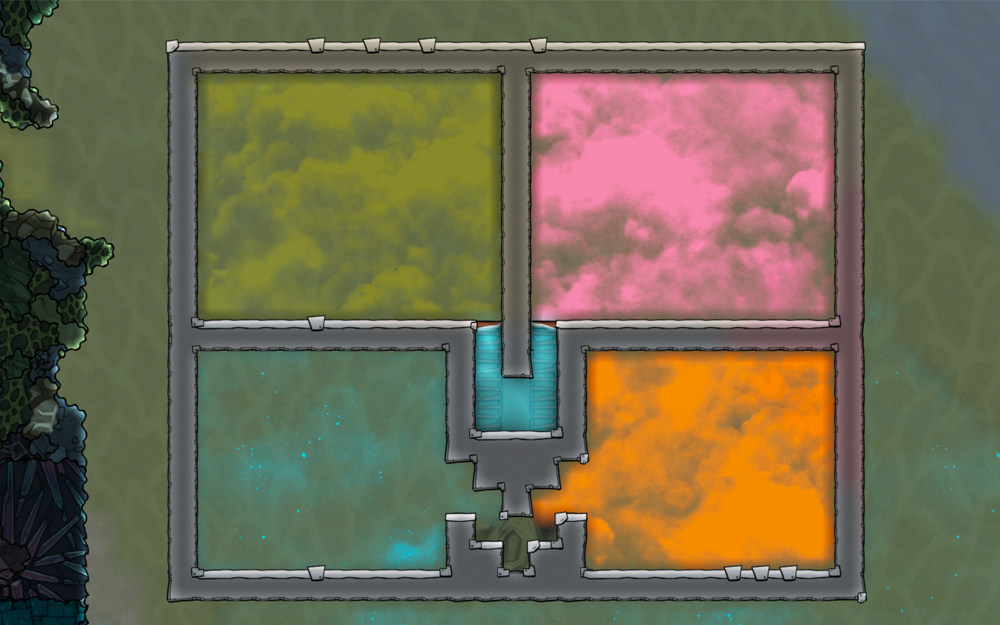
なんらかのガス間欠泉を見つけて、喜び勇んでまわりを頑丈にかこってガスが漏れないようにして突入してみたものの、ドアをどんなにうまく設置したつもりでも出入りがある度にガスがもれてしまってショボーン、ということはないだろうか。ここではそれを避けるための任意の部屋の機密性を保持しつつ、複製人間が出入り可能になるようにする液体・気体ロックについて解説する。
前提知識
まずはふたつの前提知識が必要なのでそこを解説していく。
1. 複製人間が移動するには2タイルの高さが必要
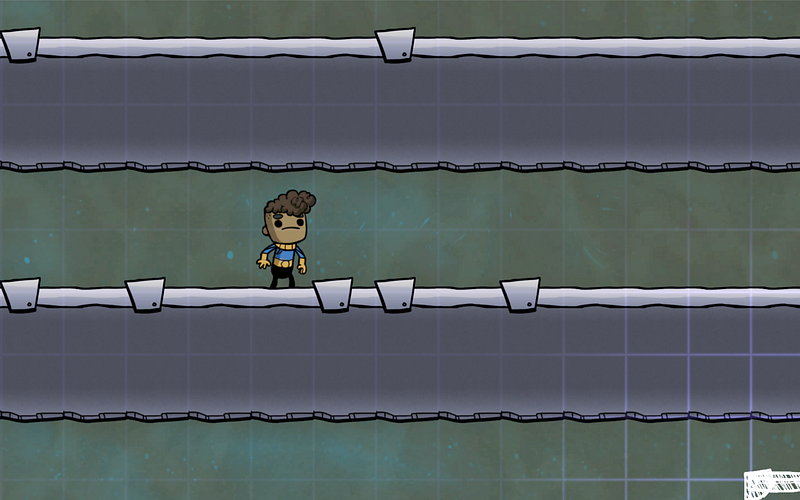
複製人間は2タイル分の高さがあれば移動できる。通路で見ると一目瞭然だ。
段差部分の移動は1タイルで済む（立った時は2タイル必要だが、段差を移動しているときは1タイルしか必要としない）。これを利用して階段を作る事ができる。
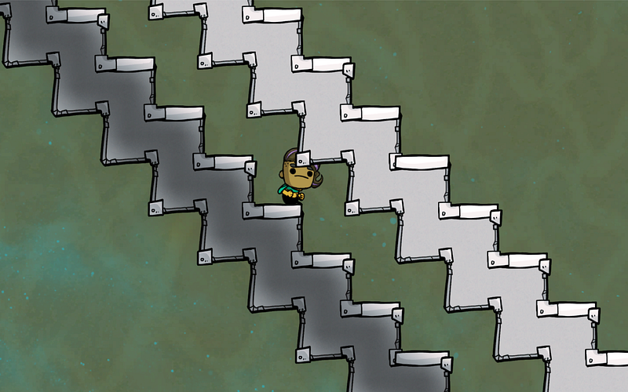
実際にこんな階段を作る事はないだろうが、まだこれから探検する場所で上下に移動したい時はこの掘り方でも移動できると覚えておくとよい。ちなみに複製人間は上下2タイルまでは移動できるので、以下のようにしてもよい。
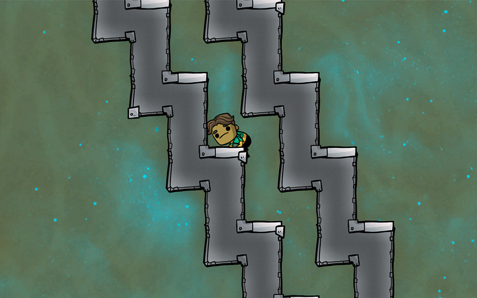
2. 液体には張力がある
このゲームの液体はただ重力に従って下に落ちるのではない。環境の気圧や液体の性質によって張力が働きその場にとどまる。特に、1タイルしかない場所では以下のように、下落ちることなく、その場にとどまってしまう。
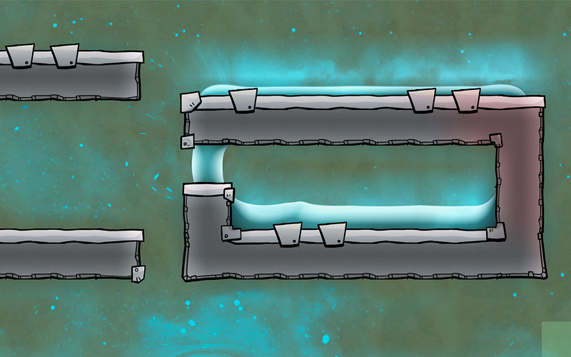
なお、ゲーム終盤にさしかかると、Visco-Gelという液体がでてくる。これは液体のくせに張力が異常に強く、液体のくせに壁を作れてしまう。
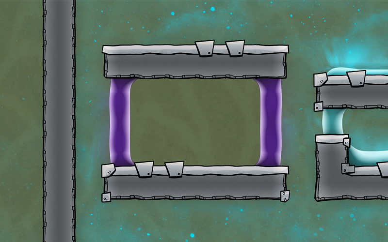
液体ロックの作り方
ここまで前提を読んでいただいた方ならもう理屈はわかってきたと思う。
まず液体の張力を利用することによって、壁を作る事ができる。そしてその壁は、複製人間が通過することはできるが、気体は通過できない。
実際前述のVisco-Gelの例では液体に守られた「部屋」の中は完全なる真空である。
Visco-Gelはちょっとチートっぽいので一旦忘れることにして、通常の液体なら重力に従って下方向に落ちようとする。
だが、これをうまく溜めることができれば、気体を通さない「壁」が作れるはずだ。
つまり
- 液体は逃げられない
- 複製人間は通れる
という条件を満たす通路を作れば、液体で右側と左側の気体が混ざらないような「壁」を作れる。これが液体ロックだ。
完成形を見せたほうが話が早いと思う。前提で説明した通り、縦2タイルの階段を一旦おりて、またあがる、という形を作る。そこに液体を充分（2000kg分）流し込んでやればこの形ができる。
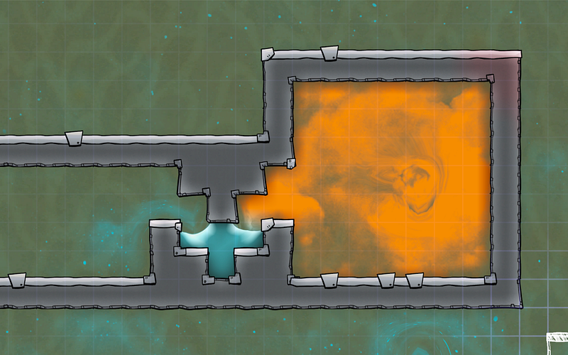
この状態を作れれば、この部屋はどんなに出入りしても中から天然ガスが漏れてくることはない。
複製人間がこの道を通ると「ずぶ濡れ」がついてしまって士気が落ちるが、基本この手のガス溜まりは呼吸ができないし、高熱であることが多いのでいずれにせよアトモスーツ推奨のエリアだ。スーツを着ていれば水の中もへっちゃらなので、気にしないに限る。
液体ロックの作り方
まず目的の部屋に穴をあける前に、すでに見せた階段の形を作れるだけ作る。
そこの下から2段目の階にボトル開けをおいておく。あとはここに指定の液体を運んでもらうだけである。
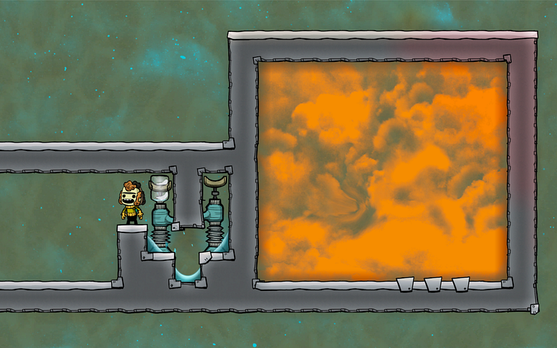
画像では階段の両側にボトル開けがあるが、これはあくまで処理スピードと、最終的にできる水たまりの「見映え」を気にするときだけだ。片側からだけ液体を流し込むと、最後にできる水たまりが片側に傾く事がある。
実際には機能的には全く問題がないので、ボトル開けはひとつでも充分だ。
充分な水がたまったら、ボトル開けを除去する。なお、気圧の関係でまだ液体が足りないのに一瞬すでに張力が働いて壁ができたように見える事がある。「できたかな？」と不安だったら、下のタイルに1000kgの液体があり、上3タイル合計でだいたい1000kgあるか確認する。全体で2000kgあれば大丈夫。あとは目視で確認。
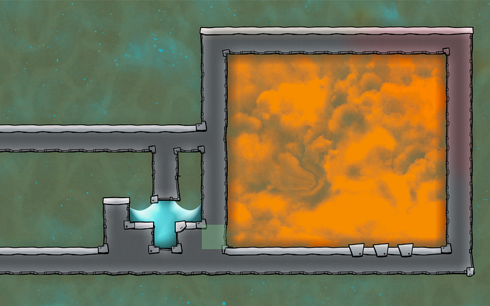
実はあってもなくてもあまり関係ないのだが、見映えの点から自分はこのあと「屋根」部分を作る
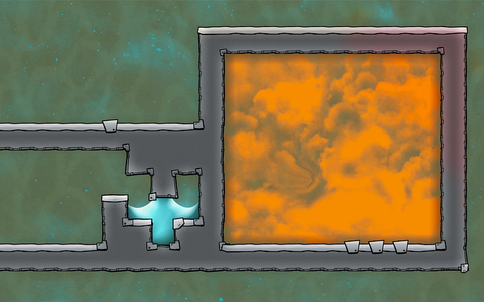
ここまでできたら、穴をあける。
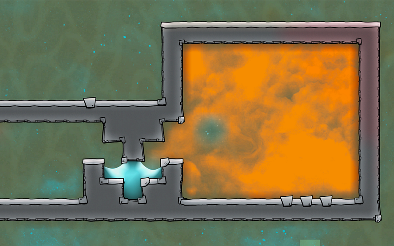
ゲーム中盤以降ならすでに水を汲み出しポンプでくみ上げてるところがあると思うので、配管して、水の移動を自動化してもよい。
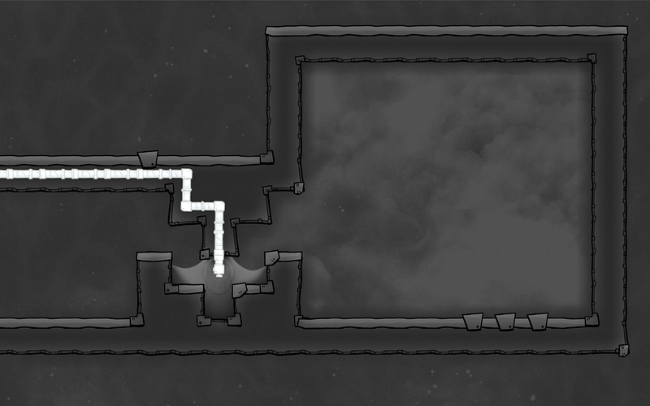
ただし、この場合だと水が溢れる可能性があるので、よく見ていないといけない。まぁ、溢れてもただの水なら特に問題はない。
このようにして液体ロックを作れば、ガスの移動を完全に止めることができる。これで天然ガスも水素も汚染酸素も処理し放題だ！
気体ロック
実は気体でも同じ形のロックを作る事ができる。どの気体でもできるわけではないが、同じ下向き階段の構造を使うなら、二酸化炭素を使うとガス溜まりを作る事ができるのだ（やったことはないが、上向きの階段を使えば多分水素でも同じ事ができる）。
現実では気体ロックのようなものは難しい。本来なら気体は混ざるし。だがこのゲーム内では複数種類の気体が同じタイルを占有することができない、というところをついた仕組みだ。
以下のようにすると二酸化炭素に邪魔されてそれぞれの部屋の気体は移動できない。
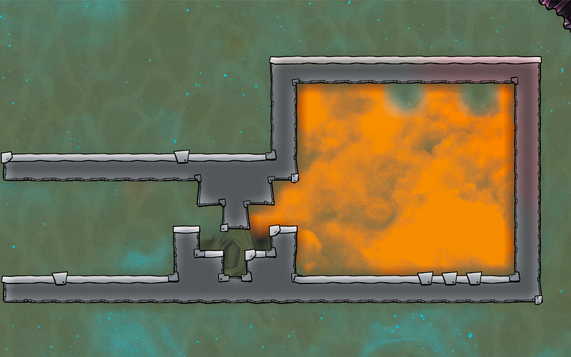
この方法だと、ずぶ濡れにはならない。が、前述の通りいずれにせよスーツ推奨のエリアだし、気体のほうが若干操作が難しいので液体ロックで充分かな、という気はしている。
最後に、仕組みが同じであれば別に形状に制限はない、ということだけ明記しておきたい。
この記事の一番最初の画像には階段をつかった溜め水エリアがあるが、あのような形でももちろん液体ロックとして動作する。
単純に液体ロックを使いたい時は縦方向への掘削が制限されていて、どうしてもガス溜まりに横方向からしか侵入しないといけない時がおおいため、今回紹介した階段状の形を使う事が多い。しかも、この階段状の形を使うと、縦4タイルの部屋・通路にピッタリとおさまるので、設計上もなかなか使い勝手がよかったりする。